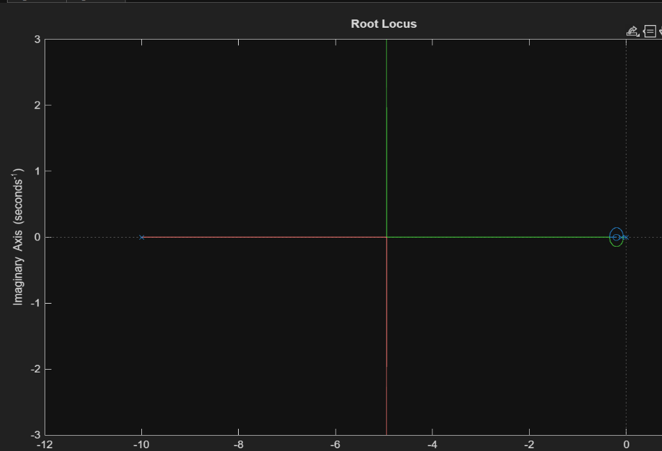
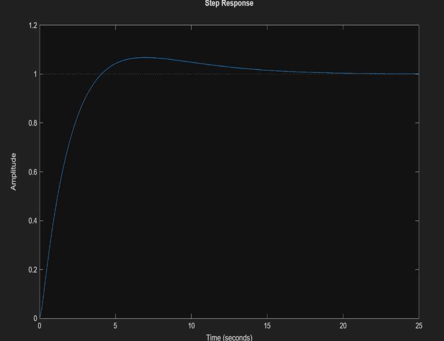
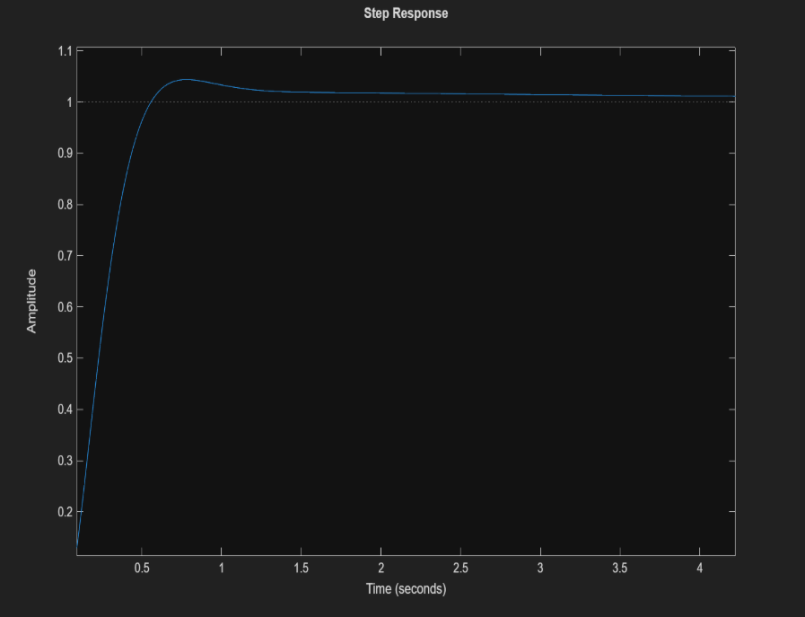
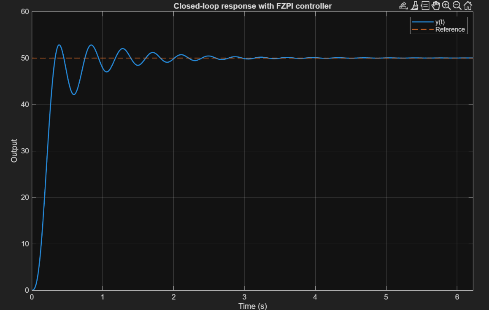
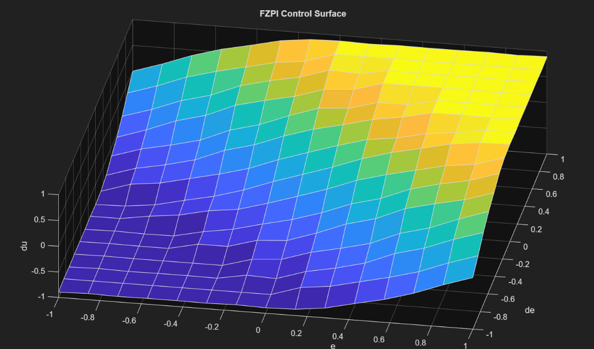

1ο Μέρος - Haberman's Survival Dataset
Πληροφορίες Dataset
- Πηγή: UCI Repository - Haberman's Survival Data
- Δείγματα: 306 instances
- Χαρακτηριστικά: 3 attributes (age, year, nodes)
- Κλάσεις: 2 (Survived ≥5 years, Died <5 years)
- Διαχωρισμός: 60% training, 20% validation, 20% test
Μεθοδολογία και Παράμετροι
Για τη μελέτη της επίδρασης του αριθμού κανόνων στην απόδοση, εκπαιδεύτηκαν τέσσερα TSK μοντέλα με διαφορετικό radius για το Subtractive Clustering:
Παράμετροι Μοντέλων
- Μοντέλο 1: Class-Dependent Clustering, radius = 0.2 (Πολλοί κανόνες)
- Μοντέλο 2: Class-Independent Clustering, radius = 0.2 (Πολλοί κανόνες)
- Μοντέλο 3: Class-Dependent Clustering, radius = 0.8 (Λίγοι κανόνες)
- Μοντέλο 4: Class-Independent Clustering, radius = 0.8 (Λίγοι κανόνες)
Αποτελέσματα Μοντέλων
| Μοντέλο | OA | PA(1) | PA(2) | UA(1) | UA(2) | Kappa |
|---|---|---|---|---|---|---|
| Class-Dependent r=0.2 | 0.639 | 0.800 | 0.188 | 0.735 | 0.250 | -0.014 |
| Class-Independent r=0.2 | 0.492 | 0.737 | 0.133 | 0.683 | 0.167 | 0.046 |
| Class-Dependent r=0.8 | 0.738 | 0.956 | 0.125 | 0.754 | 0.500 | 0.106 |
| Class-Independent r=0.8 | 0.721 | 0.955 | 0.125 | 0.750 | 0.500 | 0.131 |
Ανάλυση Αποτελεσμάτων
Καλύτερο Μοντέλο: Class-Dependent r=0.8
Πίνακας Σφαλμάτων:
| Predicted | |||
|---|---|---|---|
| True Class | Survived (1) | Died (2) | Total |
| Survived (1) | 43 | 14 | 57 |
| Died (2) | 2 | 2 | 4 |
| Total | 45 | 16 | 61 |
Παρατήρηση
Το μοντέλο έχει 14 False Negatives (ασθενείς που πέθαναν αλλά προβλέφθηκαν ως επιζώντες). Σε κλινικό περιβάλλον, αυτό το είδος λάθους είναι σοβαρότερο από το αντίστροφο, καθώς οδηγεί σε υποτίμηση του κινδύνου.
Διαγράμματα Μάθησης και Membership Functions


Σχολιασμός Αποτελεσμάτων
Επίδραση Αριθμού Κανόνων
Τα μοντέλα με μεγάλο radius (0.8) που δημιουργούν λιγότερους κανόνες έχουν καλύτερη απόδοση σε σχέση με τα μοντέλα με μικρό radius (0.2). Αυτό συμβαίνει επειδή λιγότεροι κανόνες βοηθούν το μοντέλο να γενικεύσει καλύτερα και να αποφύγει την υπερεκπαίδευση.
Class-Dependent vs Class-Independent Clustering
Η ξεχωριστή ομαδοποίηση ανά κλάση (Class-Dependent) δίνει καλύτερα αποτελέσματα. Όταν κάνουμε clustering ξεχωριστά για κάθε κλάση, τα clusters είναι πιο καθαρά και οι κανόνες πιο ερμηνεύσιμοι, με αποτέλεσμα το μοντέλο να αναγνωρίζει καλύτερα τα patterns.
Επικάλυψη Ασαφών Συνόλων
Τα ασαφή σύνολα στις εισόδους επικαλύπτονται, πράγμα που επιτρέπει σε πολλούς κανόνες να ενεργοποιούνται ταυτόχρονα. Αυτό κάνει το μοντέλο πιο ομαλό και βοηθάει στη γενίκευση.
Προτάσεις Βελτίωσης
- Cost-sensitive learning: Μεγαλύτερο κόστος για False Negatives σε ιατρικές εφαρμογές
- Feature engineering: Δημιουργία κατηγοριών ηλικίας και risk groups
- Ensemble methods: Συνδυασμός καλύτερων μοντέλων
- Cross-validation: Πιο αξιόπιστη αξιολόγηση με k-fold CV
2ο Μέρος - TSK Classification σε High-Dimensional Dataset
Πληροφορίες Dataset
- Πηγή: UCI Repository - Epileptic Seizure Recognition
- Δείγματα: 11,500 samples
- Χαρακτηριστικά: 178 features (+ 1 target class)
- Κλάσεις: 5 (1=Seizure, 2=Tumor, 3=Healthy, 4=Eyes closed, 5=Eyes open)
- Διαχωρισμός: 60% training (6,900), 20% validation (2,300), 20% test (2,300)
- Πρόκληση: Rule explosion - με grid partitioning για 178 features θα χρειάζονταν 2¹⁷⁸ κανόνες!
Μεθοδολογία: Feature Selection + Grid Search + Cross-Validation
Για την αντιμετώπιση του προβλήματος της υψηλής διαστασιμότητας, υλοποιήθηκε μια ολοκληρωμένη pipeline που συνδυάζει feature selection με βελτιστοποίηση παραμέτρων:
Αρχιτεκτονική Grid Search
- Feature Selection: ReliefF algorithm (k=10 nearest neighbors)
- Αριθμός Χαρακτηριστικών: [4, 8, 12, 16]
- Radius Subtractive Clustering: [0.3, 0.4, 0.5, 0.6, 0.9]
- Cross-Validation: 5-fold stratified
- Συνολικοί Συνδυασμοί: 4 × 5 = 20 parameter configurations
- ANFIS Training: 100 epochs
- Clustering Strategy: Class-dependent subtractive clustering
Η διαδικασία 5-fold CV χωρίζει το training set σε 5 folds, όπου κάθε fold χρησιμοποιείται μια φορά για validation ενώ τα υπόλοιπα 4 για training. Αυτό δίνει πιο αξιόπιστη εκτίμηση της απόδοσης από ένα μόνο train/val split.
Αποτελέσματα Grid Search - Διερεύνηση 20 Συνδυασμών





Παρατηρήσεις από Grid Search:
- Επίδραση Features: Από 4 σε 16 features παρατηρείται βελτίωση της απόδοσης. Με λίγα features το μοντέλο δεν μπορεί να συλλάβει την πολυπλοκότητα του προβλήματος.
- Επίδραση Radius: Μικρό radius (0.3-0.4) δημιουργεί πολλούς κανόνες. Μεγάλο radius (0.9) δίνει πολύ λίγους κανόνες. Το radius=0.5 βρίσκει καλή ισορροπία.
- Αριθμός Κανόνων: Από 9 έως 29 κανόνες ανάλογα με τον συνδυασμό παραμέτρων.
- Βέλτιστη Περιοχή: Η περιοχή 12-16 features με radius 0.5-0.6 δίνει τα καλύτερα αποτελέσματα.
Βέλτιστες Παράμετροι
Από τη διαδικασία grid search με 20 συνδυασμούς και 5-fold CV, οι βέλτιστες παράμετροι είναι:
- Αριθμός Χαρακτηριστικών: 16 (επιλεγμένα με ReliefF από τα 178 αρχικά)
- Radius: 0.5 (balanced complexity)
- Cross-Validation MSE: 0.597 → Overall Accuracy: 40.33%
- Αριθμός Κανόνων (στο CV): ~11-13 κανόνες ανά fold
Τελικό Μοντέλο - Training με Βέλτιστες Παραμέτρους
Το τελικό μοντέλο εκπαιδεύτηκε με τις βέλτιστες παραμέτρους (16 features, radius=0.5) στο πλήρες training set (6,900 samples) για 200 epochs με validation-based early stopping.


Απόδοση Τελικού Μοντέλου στο Test Set
| Κλάση | Περιγραφή | Producer's Accuracy | User's Accuracy |
|---|---|---|---|
| 1 | Seizure Activity | 96.09% | 43.17% |
| 2 | Tumor Area | 4.57% | 21.28% |
| 3 | Healthy Area | 42.39% | 38.56% |
| 4 | Eyes Closed | 46.74% | 38.24% |
| 5 | Eyes Open | 7.39% | 17.65% |
Ανάλυση Αποτελεσμάτων:
Overall Performance: Το μοντέλο πέτυχε 38.22% ακρίβεια στο test set, κοντά στην CV απόδοση (40.33%). Η απόλυτη ακρίβεια είναι χαμηλή, κάτι που οφείλεται στη φύση του προβλήματος και την ανισορροπία των κλάσεων.
Class Imbalance: Οι κλάσεις 2 (Tumor) και 5 (Eyes Open) έχουν πολύ χαμηλή Producer's Accuracy (4.57% και 7.39% αντίστοιχα). Το μοντέλο αποτυγχάνει να ανιχνεύσει τα περισσότερα samples αυτών των κλάσεων, πιθανώς λόγω λιγότερων training samples ή επικάλυψης με άλλες κλάσεις.
Class 1 Bias: Η κλάση 1 (Seizure) έχει πολύ υψηλή PA (96.09%) αλλά χαμηλή UA (43.17%). Το μοντέλο ταξινομεί πολλά samples ως "Seizure" ακόμα και όταν δεν είναι.
Kappa = 0.2278: Το μοντέλο έχει μέτρια απόδοση.
Rule Explosion Analysis - Σύγκριση με Grid Partitioning
Ένα από τα κεντρικά ερωτήματα της εργασίας είναι πόσο αποτελεσματικό είναι το subtractive clustering στη μείωση των κανόνων σε σχέση με το κλασικό grid partitioning.
Θεωρητικός Αριθμός Κανόνων με Grid Partitioning
Αν είχαμε χρησιμοποιήσει grid partitioning αντί για subtractive clustering για τα 16 επιλεγμένα features:
- Grid με 2 MFs ανά είσοδο: 2¹⁶ = 65,536 κανόνες
- Grid με 3 MFs ανά είσοδο: 3¹⁶ = 43,046,721 κανόνες
Με το Subtractive Clustering: 11 κανόνες
Reduction Factors:
- Vs 2 MFs/input: 5,958× μείωση
- Vs 3 MFs/input: 3,913,338× μείωση
Το subtractive clustering καθιστά πρακτικά εφικτή τη μοντελοποίηση προβλημάτων με μεσαίο αριθμό χαρακτηριστικών. Χωρίς αυτό, ένα TSK σύστημα με 16 inputs θα ήταν υπολογιστικά απαγορευτικό.
Feature Selection Analysis
Το ReliefF algorithm επέλεξε 16 από τα 178 διαθέσιμα features:
Membership Functions
Από την Εικόνα 11 παρατηρούμε ότι τα membership functions μετά το training έχουν σημαντική επικάλυψη. Αυτό επιτρέπει ομαλές μεταβάσεις μεταξύ των κανόνων και κάθε input μπορεί να ενεργοποιεί πολλαπλούς κανόνες.
Συμπεράσματα 2ου Μέρους
Επιτυχίες:
- Grid search βελτιστοποίησε δύο κρίσιμες παραμέτρους
- Μείωση από 178 σε 16 features (91%)
- Subtractive clustering μείωσε τους κανόνες από 65,536 σε 11 (5,958×)
- 5-fold CV έδωσε αξιόπιστη εκτίμηση (CV: 40.33%, Test: 38.22%)
- Class-dependent clustering βοήθησε στη διατήρηση των patterns
Περιορισμοί:
- Η ακρίβεια (38.22%) είναι χαμηλή για πολύπλοκο πρόβλημα 5 κλάσεων
- Class imbalance (κλάσεις 2 και 5 με PA < 8%)
- Δυσκολία διαχωρισμού των κλάσεων 3, 4, 5
Γενικό Συμπέρασμα: Η μέθοδος ReliefF + Subtractive Clustering + ANFIS με grid search αντιμετώπισε επιτυχώς το rule explosion. Το μοντέλο πετυχαίνει ισορροπία μεταξύ πολυπλοκότητας και ερμηνευσιμότητας.